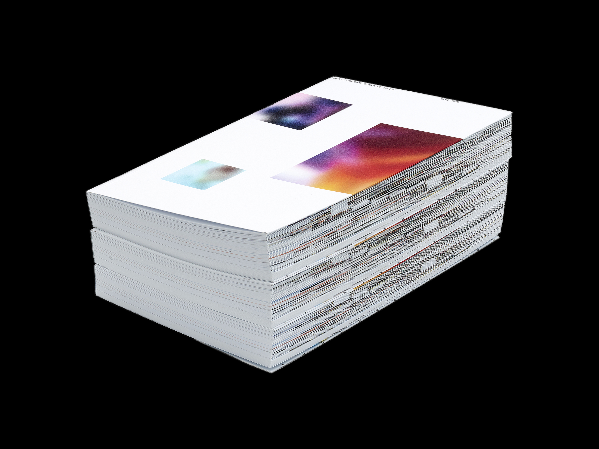
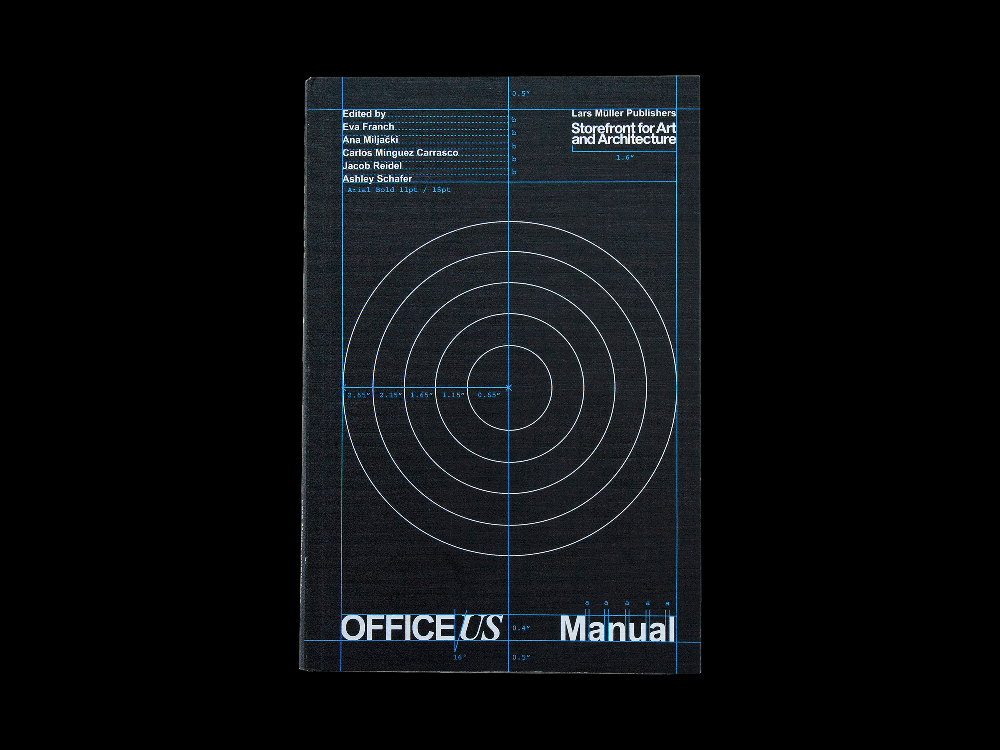

Currently, I co-lead Green Antarctica. I also teach at Parsons. Before that, I was at Base Design, Pentagram, and Math Practice. Most of my recent work lives on Are.na and Instagram. Select clients and collaborators include Somssi, Notion, Order Design, Harvard GSD, Storefront for Art and Architecture, Frenzy Image, LOROD, and Meatpacking District.

